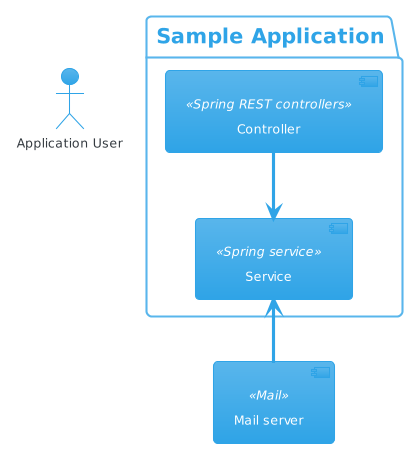

Poule-au-Pot
RASPBERRY PI:
Deployer un site .onion sur Raspberry pi
Les prérequis
Création du site web
Création du serveur avec Python
Choix 1 : Appeler le module python en ligne de commande
Choix 2 : Ecrire un script python (un poil plus complexe si on début en python)
Configuration de Tor
Accès depuis l’exterieur
Lançons le serveur
On va tester pour être sûr du coup … (les québecois ont compris en une phrase que je suis français)
Créer un serveur NGINX sur Raspberry pi
Containers and Virtual Machine
Poule-au-Pot
»
Containers and Virtual Machine
Afficher la source de la page
Containers and Virtual Machine
– crt-green
